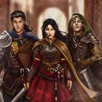

Remnant Chronicles

The The Remnant Chronicles by Mary E. Pearson features characters who are complex, morally conflicted, and shaped by the political tensions between their kingdoms. Rather than simple heroes or villains, many characters struggle between duty, loyalty, and personal feelings. Characters like Princess Arabella Celestine Idris Jezelia (Lia), Kaden, and Prince Rafe often hide their true identities or motives, creating tension and mystery as the story unfolds. The series emphasizes strong character growth, especially as individuals are forced to confront war, betrayal, love, and leadership. Overall, the characters tend to be resilient, determined, and deeply human, balancing moments of vulnerability with courage as they navigate a dangerous and politically divided world.
